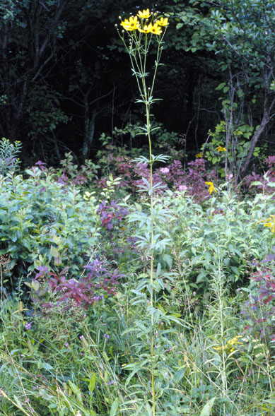
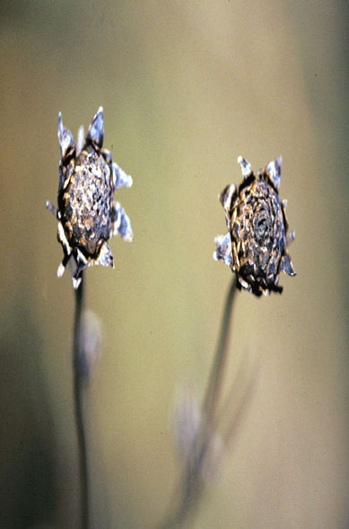
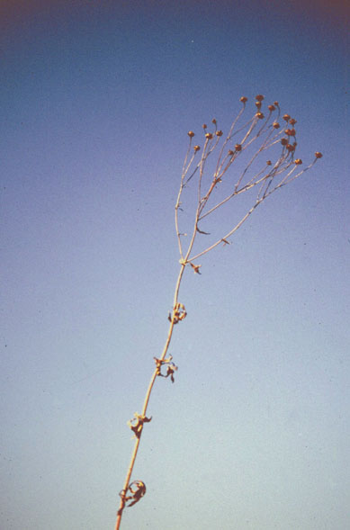
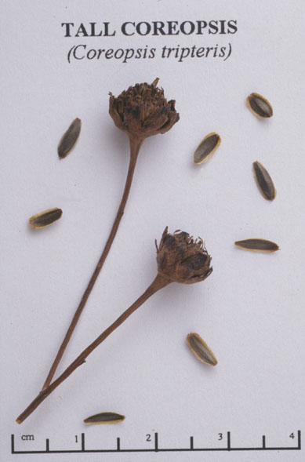

Coreopsis tripteris
Family: Asteraceae
Tall Coreopsis
Swink/Wilhelm #5



FLOWERING: Late July to early October.
SEED TIMING: Mid-August to November.
HABITAT: Prairies and savannas.
DIAGNOSTIC FEATURES: 3 - 8 feet high. Variable, mostly three-parted, lance-shaped leaves. Canary yellow petals with purple-brown disks. Rays are rounded at tips.
TO PICK: Whole plant turns a rich brown color standing high above most other prairie plants. Pick entire, dried flower head.